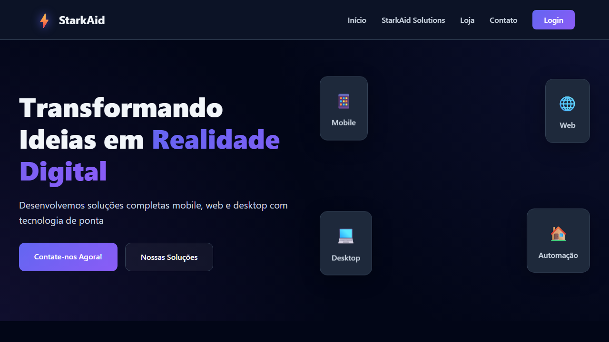
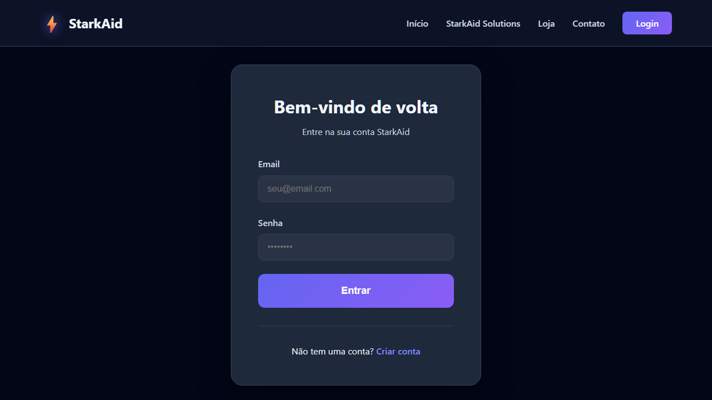
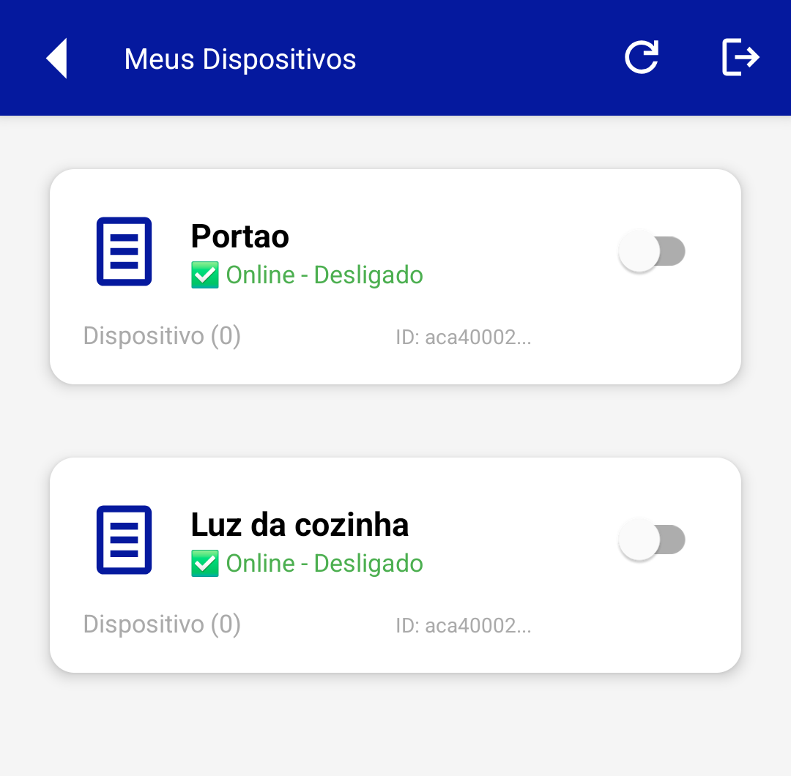
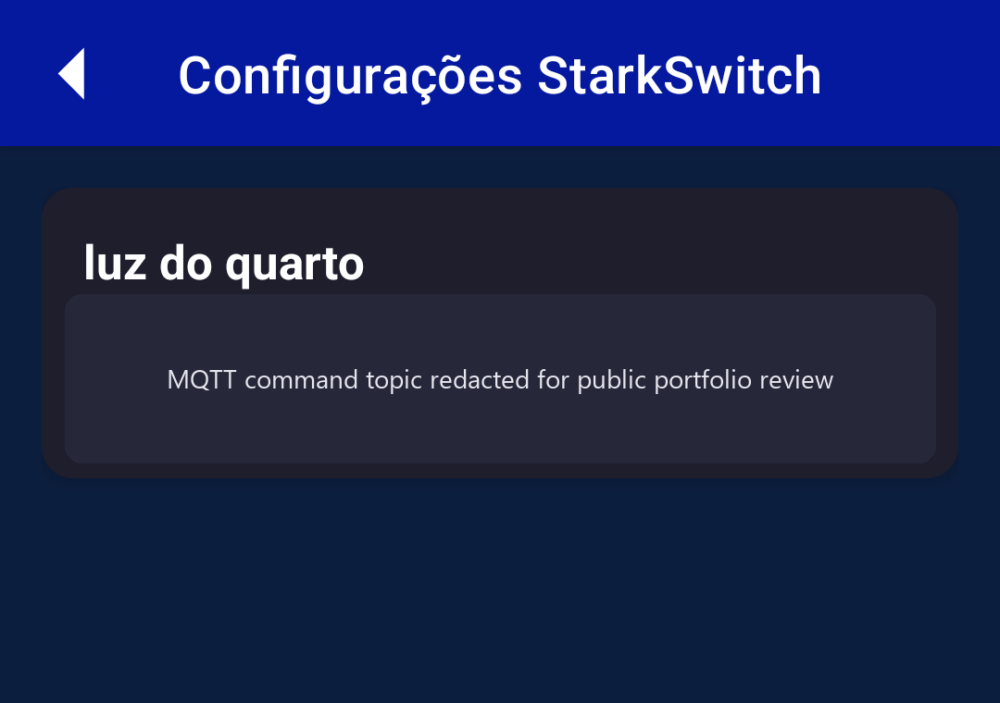

Public automation surface online right now, not just screenshots and code.
Adriano Carmo
Product Portfolio
I build and deploy real .NET systems used by real users.
APIs with JWT authentication, real-time communication via SignalR, Blazor dashboards, Android clients, and IoT integration via MQTT.
Deployed and tested by real users, with continuous improvements based on production feedback.
StarkAid is the strongest public proof: a deployed automation platform with JWT-authenticated APIs, SignalR updates, Kotlin Android clients, SQL-backed state, and IoT device control via MQTT.
NewSchool Family is the second proof: a published homeschooling product with guided lessons, family workflows, evidence storage, curriculum sequencing, and Stripe-backed plans.
Built and deployed systems used by real users, with bug fixes and improvements based on production feedback.
Public flagship repository documented and aligned with visible CI build validation.
Production Experience
Software that was deployed, used, and improved after feedback
Built and deployed systems used by real users, with bug fixes and improvements based on production feedback.
I have built and deployed real systems, tested by real users, with bug fixes and improvements based on actual usage. My focus is not only writing code, but shipping software that works outside a local environment.
Production-oriented delivery
These projects were shaped around deployment, auth, persistence, support, and runtime behavior instead of tutorial-only code paths.
Feedback-driven iteration
The public repos are cleaned for review, but the product decisions came from actual usage, bug fixing, and operational adjustment.
Proof Surface
Open direct evidence
Runtime Flow
User → API → MQTT → Device → SignalR → Client
Auth, device command dispatch, realtime feedback, and client updates are part of the same runtime path.
- Use the live StarkAid web surface to confirm the automation product is online.
- Open the product demo video to see the product shape before source review.
- Open the Android walkthrough for mobile screenshots and a short client video.
- Open the live NewSchool Family surface and screenshots to review a second product in a different market.
Screenshots
Proof without opening the video first
A quick visual pass shows a live public web surface, auth entry point, and two different device-control flows in the Android client.

Public web surface
Live product-facing entry point for the automation platform.

Authentication flow
Visible login surface tied to the JWT-based backend.

eWeLink devices
Connected-device inventory with runtime status and command controls.

StarkSwitch control
MQTT-backed device control flow with portfolio-safe redaction.
What StarkAid Solves
One product instead of scattered automation surfaces
Centralized device control
ESP32, eWeLink, and related automation flows connect to one backend instead of living in isolated scripts or apps.
Operational support
Support and maintenance flows exist as first-class product surfaces, not as afterthoughts outside the system.
Realtime user experience
SignalR and synchronized flows connect browser, Android, and backend state for support and device operations.
Commercial structure
Authentication, plans, notifications, routines, and billing hooks are part of the same product shape.
Featured Work
Start with these systems
StarkAidApi
Deployed automation platform with JWT-authenticated APIs, Blazor admin surfaces, SignalR-driven realtime updates, MQTT-based device control, support flows, and published web proof.
- ASP.NET Core, Blazor, SignalR, JWT, SQL-backed state, MQTT orchestration, and operational admin surfaces
- Best first stop for reviewing auth, realtime communication, device orchestration, and product runtime flow
- Includes live demo, video, screenshots, setup notes, and visible CI validation
starkaidautomacao
Kotlin Android client for device control, realtime account flows, support scenarios, and continuity with the deployed StarkAid backend.
- Connected-device screens for eWeLink and StarkSwitch flows, plus routines and support surfaces
- Environment-aware configuration instead of hardcoded secrets leaking into the public repo
- Pairs directly with StarkAidApi to prove mobile-to-backend continuity
newschool-family
Published homeschooling platform for guided daily lessons, annual curriculum pacing, evidence storage, printable material, and Stripe-backed family plans.
- ASP.NET Core MVC, EF Core, SQL Server, Stripe billing, modular-monolith organization, and mobile-first public pages
- Concrete second proof that I can ship a real product outside the automation domain without collapsing into generic CRUD
- Published system plus repository screenshots covering dashboard, lessons, curriculum, library, printables, and evidence center
ClinicoPro NeuroObservational
Structured .NET 8 clinical platform showing layered architecture, validation discipline, JWT auth, and service separation.
- Blazor WebAssembly, EF Core, JWT, FluentValidation, and SignalR
- Good repository for reviewing auth, validation, service layering, and domain-oriented design
- Useful as the cleanest architecture-first sample beside StarkAid
Proof And Review
Signals that matter in 30 to 60 seconds
Problem to solution
StarkAid is presented as a real automation product: connected devices, admin tooling, support, and account flows.
Proof of operation
Live public web surface, short demo video, and visible repo documentation give fast proof before deep review.
Architecture depth
JWT, EF Core, SignalR, SQL persistence, Android continuity, and realtime support flows are visible in public code.
Environment discipline
Published repos are being shaped to show configuration boundaries, secret handling expectations, and cleaner delivery paths.
Review Order
Fastest path through the portfolio
- Open the live StarkAid web surface to understand the product domain fast.
- Use StarkAidApi for backend depth, auth, device orchestration, and support architecture.
- Open starkaidautomacao to verify Android continuity and integration discipline.
- Open newschool-family to review a second product domain: homeschooling workflow, curriculum, evidence, and billing.
- Use ClinicoPro as the cleanest enterprise-style sample for layered .NET work.
Working Style
Best collaboration conditions
I work best in structured, written-first engineering environments with clear context, fewer interruptions, and responsibility centered on backend ownership, architecture, and difficult implementation details.
.NET 8
ASP.NET Core
Blazor WebAssembly
Entity Framework Core
SQL Server
JWT
SignalR
FluentValidation
Kotlin Android
Async Communication
Portuguese-Speaking
Low-Meeting Flow
Public Surface
Direct links
Live StarkAid Web
Public automation surface online now
Product Demo Video
Product walkthrough before deeper repo review
GitHub Profile
@Starkaid01
Technical Resume
Public summary and printable review page
Instagram Contact
@adriano_leadr.dev
StarkAidApi
Architecture-first automation platform
starkaidautomacao
Kotlin Android automation client
newschool-family
Homeschooling product with guided lessons and evidence flows
Live NewSchool Family
Published homeschooling product running on Azure
ClinicoPro NeuroObservational
Clinical .NET 8 system with layered architecture